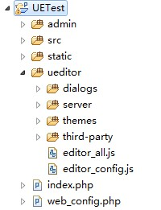
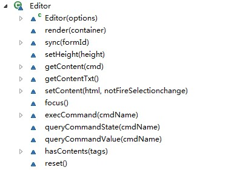
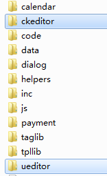
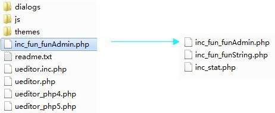
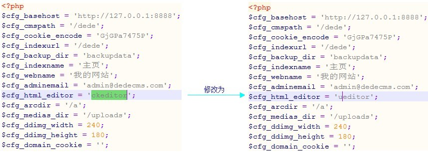

目录
针对普通的网站使用者
1.1完整版的部署和体验
1) 官网上下载完整源码包，解压到任意目录，解压后的源码目录结构如下所示：
- _examples：编辑器完整版的示例页面
- _demos：编辑器的各种使用案例
- dialogs：弹出对话框对应的资源和JS文件
- themes：样式图片和样式文件
- server：涉及到服务器端操作的PHP、JSP等文件
- third-party：第三方插件
- editor_all.js：_src目录下所有文件的打包文件
- editor_all_min.js：editor_all.js文件的压缩版，建议在正式部署时才采用
- editor_config.js：编辑器的配置文件，建议和编辑器实例化页面置于同一目录
2) 部署UEditor到实际项目（UETest）中的步骤:
- 第一步：在项目的任一文件夹中建立一个用于存放UEditor相关资源和文件的目录，此处在项目根目录下建立，起名为ueditor。
- 第二步：拷贝源码包中的dialogs、themes、third-party、editor_all.js和editor_config.js到ueditor文夹中。理论上，前端的所有文件除了编辑器实例化页面外此刻已经全部具备，此处为了体验图片上传等功能，将server文件夹一并拷贝到ueditor目录中。整体的项目结构如右图所示。其中，除了ueditor目录之外的其余文件均为具体项目文件，此处所列仅供示例。
- 第三步：为简单起见，此处将以根目录下的index.php页面作为编辑器的实例化页面，用来展示UEditor的完整版效果。在index.php文件中，首先导入编辑器需要的三个入口文件，示例代码如下：
<head> <meta http-equiv="Content-Type" content="text/html; charset=UTF-8"> <title>编辑器完整版实例</title> <script type="text/javascript" src="ueditor/editor_config.js"></script> <script type="text/javascript" src="ueditor/editor_all.js"></script> <link rel="stylesheet" href="ueditor/themes/default/ueditor.css"/> </head>
需要注意的是，此处的editor_config.js最好先于editor_all.js加载，否则特定情况下可能会出现报错。 -
第四步：创建编辑器实例及其DOM容器。具体代码示例如下：
<body> <div id="myEditor"></div> <script type="text/javascript"> var editor = new baidu.editor.ui.Editor(); editor.render("myEditor"); </script> </body>若希望给编辑器赋初值，此处的div可换成<script type="text/plain" id="myEditor">初始内容</script>来设置初始内容，编辑器自动完成两者之间的转换，完全不会影响最后的显示效果。 -
第五步：到此为止，编辑器所需的所有资源文件、代码、实例化操作、显示容器等等都已经准备完成。
还剩下最后一个操作——配置编辑器资源路径，也就是让编辑器中的代码能够正确找到对应的dialog、css、表情等资源文件。这里需要配置的是ueditor目录在当前网站中的相对路径。在正式开始配置之前首先需要弄明白一个关于相对路径的知识点：如果文件1被文件2导入，那么当在文件1中去获取其他文件的路径时，需要以文件2所处的相对路径作为当前路径，而并非是文件1自身所在的路径。
对应到当前的项目实例，editor_config.js被index.php导入，那么此时的editor_config.js实际上处于与index.php同级的目录结构中。于是，在editor_config.js中所配置的所有相对路径都需要以index.php所在的目录（此处是根目录）为基准。清楚了这点，ueditor目录的相对路径就一目了然了！var URL= "./ueditor/"; //这里你可以配置成ueditor目录在您网站的相对路径或者绝对路径（指以http开头的绝对路径这就是我们最后需要配置的结果。从1.1.7.3版本开始，建议在此处配置的路径从相对于服务器根目录开始配置，形如"/mySite/ueditor/"，或者采用源码包中editor_config.js中提供的配置方法，以达到最简的部署步骤。至此，一个完整的编辑器实例就已经部署到咱们的项目中了！在浏览器中输入http://localhost/UETest运行下试试UE强大的功能吧！
3) 注意事项
之前有很多同学反映插入表情后不能显示、dialog对话框找不到、 iframe.css加载不了等等问题，基本上全部都是editor_config.js文件中的URL参数配置不正确导致的。URL参数的实质是编辑器指向dialogs、themes、third-party等资源文件夹所在的目录的指针，如果弄明白了这点的话，那不管在什么地方实例化编辑器，我们都可以很容易地配置出正确的路径来。举个比较纠结点的例子：现有UETest/admin/manager/user/list/目录下的add_user.php文件需要实例化一个编辑器，该页面同样引用的是ueditor目录下的editor_config.js文件。那么此时的URL参数该是什么呢？显然，editor_config.js文件仍然处于和add_user.php文件一个级别的目录上，从这个目录到ueditor目录需要返回四层到达UETest目录，因此，这个时候的URL = "../../../../ueditor/";
细心的同学可能已经注意到了配置项中有关于上传图片路径的配置：
imagePath : URL + "server/upload/",
实际上，由于图片保存页面和展示页面不在同一个目录，因此在对应页面中的相对路径../以及./所指代的实际路径是不一样的。如果采用了相对路径作为服务器端返回的地址，在展示页面是取不到正确路径的，此处的路径配置正是为了修正这种差异。当然，如果服务器端直接返回图片的绝对地址给客户端，那么就无需上述配置了。下文还有针对图片上传的专题章节，点此马上参观。
1.2自定义配置
UEditor除了具有轻量、可定制等优点外，还始终将优化编辑操作、提升用户体验摆在了很重要的位置。在这一点上，除了对编辑器功能、性能、实现细节等不断地改进和追求创新之外，众多灵活而人性化的自定义配置也充分地体现了这个特点，通过修改配置项的值，用户几乎可以完全地改变编辑器的外观和行为。
从配置本身的优先级来看，UEditor的配置可以分为系统默认配置和用户自定义配置两种类型。系统默认配置是指editor_config.js中的所有配置，而用户自定义配置则是指用户在实例化编辑器的时候传入的JSON格式的配置。用户自定义配置的优先级高于系统默认配置，若两者同名，则覆盖系统默认配置。若未提供对应的用户自定义配置，则采用系统默认配置。一般情况下，推荐用户在实例化的时候使用自定义配置来代替修改系统默认配置。
从配置对编辑器的作用来看，UEditor的配置又可以分为界面配置和功能配置两种类型。界面配置主要集中在工具栏配置和初始化配置上；功能配置由于相对较多，下文将筛选一些同学们容易迷惑的配置项来进行讲解，而其他简单的则只要参考具体配置项对应的注释即可。
1) 界面配置
-
工具栏配置
默认配置项中包含了编辑器的所有按钮，需要改变时，只要在初始化的时候传入对应参数即可。示例代码如下：var editor = new baidu.editor.ui.Editor({ toolbars:[['Paragraph','RowSpacing','FontFamily','FontSize']] }); editor.render("myEditor");这个时候的编辑就只有四个工具按钮了。关于工具栏的更多高级配置，比如改变布局结构，双栏和单栏混排等等，下文还有专题章节进行完整地介绍，点此马上参观 。 -
初始化内容
上文曾经讲过，实例化的时候可以使用<textarea id="editor">初始内容</textarea>来为编辑器赋初始值。以PHP为例的话，可以将“初始内容”替换成<?=$content?>来动态从服务器去获取。当有些地方不适合使用textarea作为编辑器容器时，比如上文采用div作为容器时，那如何来初始化内容呢？很简单，一句话而已：var editor = new baidu.editor.ui.Editor({ initialContent: '<span style="color:#ccc">欢迎使用ueditor</span>' }); editor.render("myEditor"); -
初始化样式
由于编辑器的编辑框位于一个单独的iframe中，因此希望通过在编辑器实例化页面设置编辑框中的元素样式是行不通的。UEditor为大家提供了两种方式来改变编辑框中的元素样式：一种是通过修改initialStyle的内容来实现，另外一种是通过iframeCssUrl引用外部的CSS文件来实现。具体的代码例子如下：var editor = new baidu.editor.ui.Editor({ initialStyle: 'body{margin:8px;font-family:"宋体";font-size:16px;}', iframeCssUrl: 'themes/default/iframe.css' }); editor.render("myEditor");需要注意的是，如果同时配置了这两个参数，那么initialStyle中的配置将优先于iframeCssUrl指向的CSS文件中的配置。另外，由于编辑器中的有些功能效果实现需要依赖于initialStyle中的默认配置，比如框选表格的蓝色背景效果，因此，一般情况下不建议用户删除默认配置项中的默认样式类，除非已经确认不需要对应的功能。 -
ElementPath
编辑框下部的path部分。不需要的同学设置elementPathEnabled : false即可。 -
字数统计
编辑框下部的字数统计部分。不需要的同学设置wordCount:false 即可。当设置开启时，还可以通过maximumWords参数来控制允许的最大字符数、wordCountMsg参数来控制需要显示的提示文字、wordOverFlowMsg参数来控制超出最大字数限制时候的提示文字。 -
编辑器最小高度和自动长高
编辑器的最小高度由配置项minFrameHeight来确定，而autoHeightEnabled:true则让编辑器的编辑框部分可以随着编辑内容的增加而自动长高。 -
工具栏浮动
工具栏浮动是指当编辑框的顶部超出了浏览器顶部的时候，工具栏会一直浮动在浏览器的顶部，方便大家的编辑操作。在编辑框高度固定的编辑器实例页面中，建议关闭此项功能以获得最好的性能和体验：autoFloatEnabled: false
2) 功能配置
UEditor由于功能点较多，同时又希望能够带给用户更加灵活个性的编辑需求，因此在功能配置上显得有点令人眼花缭乱。不过对于大部分用户来说，维持默认配置是最佳的选择，实在有特殊需求时才考虑修改配置。
尽管配置较多，但是大部分配置都一目了然，基本不需要特别的解释。这里总结出同学们问的较多的一些配置项进行简单的讲解，其余配置请同学们自行查看editor_config.js文件中的对应注释即可。
-
提交表单的域名
将编辑器的容器置于一个form表单之中，后台如何获取编辑器中的内容呢？UEditor内部做了自动处理，无需用户诸如再创建一个隐藏表单来放置编辑内容等操作，只需要在配置项中设置textarea : 'editorValue'即可，后台则可以直接通过$_POST['editorValue']或者request.getParameter("editorValue")等方式来获取编辑器中的内容。 -
图片相对路径
在1.1.7版本之前（包括1.1.7版），进入编辑器内的图片地址没有经过特殊处理，造成不同的浏览器中呈现出不一样的地址结果（绝对和相对），从而对后期的程序移植造成了一定程度的影响。1.1.7.3版开始可以通过开启本配置项来强制项目中所有的相对路径都以相对于根目录的相对路径来展示，方便了同学们的后期移植。 -
黑白名单
UEditor提供了功能强大的黑白名单过滤机制，简单的几个配置就可以拦截任何不安全因素于编辑器之外。黑白名单可以同时使用，也可以单独分开使用。黑名单中的标签将会被编辑器完整地过滤掉，包括标签本身以及标签之内的任何内容。而不在白名单之中的那些标签则仅被过滤了标签本身，其内容会继续走过滤流程。
具体的黑白名单配置示例如下所示，其中$表示元素的属性：serialize : function(){ return { //黑名单，表示不允许任何style、script、link、object、applet和input标签 blackList: {style:1,script:1,link:1,object:1,applet:1,input:1}, //白名单 whiteList: { //表示允许div标签，且其可包含p、span和br标签，style、class属性 div: {p:1,span:1,br:1,$:{style:1,class:1}}, //表示允许img标签，且只能包含href、title和alt属性 img: {$:{href:1,title:1,alt:1}} } } }() -
表情本地化
鉴于有些内网用户不能访问外网而导致的编辑器表情功能不可用，从1.1.7正式版开始，UEditor提供了表情本地化功能。更改配置emotionLocalization:true 即可开启本地表情功能。当然，本地表情功能必须要确保dialogs/emotion/目录下存在官方提供的images文件夹及所有表情文件。表情本地化之后，大家更换起表情文件来也就相当方便了！ -
自动清除编辑器初始化内容
很多时候，初始化之后的编辑器框中需要留下一句诸如“请在这里发表您的看法吧！”、“欢迎使用UEditor！”之类的提示或者问候语。如何在光标定位到编辑框的时候自动清除这些内容呢？尝试下autoClearinitialContent:true吧，会有惊喜哦！
1.3前后端数据整合
1) Editor实例下的API介绍
UEditor目前向外部提供了不包括构造函数在内的12个方法，具体的类图如下：

每个方法的使用方法和示例将会在API列表中给出，点此下载。
2) 前后端数据交互
前后端的数据交互主要可分为数据提交和数据获取（从服务器）两种类型。
对于数据提交，UEditor为了优化用户的部署体验，特别针对数据提交做了特殊处理，用户不需要创建隐藏表单之类的元素来暂存编辑器值，而只需要在编辑器容器外围套上一层FORM标签，然后在配置项中设定一个名为textarea（名字有点撮！历史原因，大家将就下吧）的值即可。具体代码示例如下：
<form id="myForm" action="getContent.php" method="post">
<script type="text/plain" id="myEditor">这里可以填写一些初始化内容</script>
<input type="submit" value="Form内部提交数据" />
</form>
<script type="text/javascript">
var editor = new baidu.editor.ui.Editor({
textarea:'myValue'
});
editor.render("myEditor");
</script>
完成上面两步之后，后台的getContent.php文件就能够通过$_POST['myValue']或则request.getParameter("myValue")来获取编辑器中的内容了。
当然，在很多情况下我们可能不会直接在FORM中添加一个submit提交按钮，而是通过外部的事件或程序来触发FORM的submit()方法。这个时候大家可能会发现后台取不到数据了！！原因是外部事件或者程序中触发的submit方法调用无法进一步触发UEditor为方便大家提交数据所做的特殊处理函数，从而导致了数据提交的失败。
因此，如果不是由FORM内部submit按钮提交的任何其他数据提交方式，都必须在执行submit()方法之前执行一遍editor.sync()方法！只有这样，才能保证后端正确接收到编辑器中的所有内容。代码示例如下：
if(editor.hasContents()){ //提交条件满足时提交内容
editor.sync(); //此处的editor是页面实例化出来的编辑器对象
document.getElementById('myForm').submit();
}
服务器端获取到编辑器中的内容之后，一般需要对获取到的内容进行过滤和转义之后再存入到数据库中。以PHP为例，在获取到编辑器中的初始值$editorValue之后，一般要经过stripslashes($editorValue)（如果服务开启了反斜杠功能的话，需要这步处理，否则略过。）、htmlspecialchars（$editorValue）等操作后再存入数据库。
同样的道理，当我们需要从数据库中取出数据显示在页面上或者编辑器内重新编辑时，由于此时的数据是经过转义的，所以必须重新进行一次相反的转义过程。以PHP页面中取出数据库中的文章内容显示到编辑器内为例，可以分两种方式来重新赋值：
- 第一种方式是将取出的内容放置到编辑器容器标签内，示例代码如下：
<form action="getContent.php" method="post" id="form"> <script type="text/plain" id="myEditor"> <?php htmlspecialchars_decode(getContentFromMysql())?> </script> </form> - 第二种方式是使用编辑器提供的方法setContent(str)来赋值，示例代码如下：
<form action="getContent.php" method="post" id="form"> <script type="text/plain" id="myEditor"></script> </form> <script type="text/javascript"> var editor = new baidu.editor.ui.Editor({textarea:'myValue'}); editor.render("myEditor"); </script> <?php $content = htmlspecialchars_decode(getContentFromMysql()); echo "<script>editor.setContent('".$content."')</script>"; ?>需要注意的是，此处的echo语句必须在页面已经完成了编辑器的初始化之后才能调用，否则会出现JS代码报错。因此一般推荐使用第一种方式来初始化从服务器返回的文档内容。
3) 图片上传
UEditor的图片上传采用了Flash上传的方式，在功能上支持批量、本地预览和实时进度提示，在界面上支持自定义背景、上传按钮和预览框等视觉元素的样式属性，基本能够满足各种用户的不同上传需求。
由于涉及到了后端开发语言、flash、js和html等各种不同的web元素，图片上传这块的配置和使用相对来说稍显复杂，不过只要同学们认真看完以下的内容，那一切都不是什么问题了。下面我们仍然以上文中的完整版实例来一步一步完成这个过程。
先来回顾一下完整版部署章节中提到的项目目录结构，如下左图所示。为了更加符合一般网站的具体实际，也为了更清晰地展示整体的路径配置流程，我们先对这个目录做一下小的改动：将ueditor目录下的server文件夹提取出来放置到根目录中的admin文件夹下。调整后的目录结构如下右图所示

首先来看前端部分的文件及其配置。打开dialogs/image文件夹，我们可以发现四个文件：
- callback.js：本上传模块支持的所有回调函数，同学们可以按需选用其中的内容。对于不需要做二次开发的同学来说，可以放心地直接删除。
- image.html：图片上传对话框的主体文件。前端的配置和修改基本在此处完成。
- imageUploader.swf：Flash上传文件。
- tangram.js：百度前端框架tangram封装的flash操作模块。一般无需修改。
打开image.html文件，找到baidu.swf.create()方法，有关图片上传的大部分配置都在这里进行。这其中的绝大部分参数相信同学们对着注释都能很容易明白意思，下面将挑选几个需要稍微解释的参数进行讲解：
首先是backgroundUrl、listBackgroundUrl和buttonUrl这三个参数。UEditor为了让上传flash的界面能够满足各种不同的网站风格，预留出了这三个参数让同学们可以自己定义上传框的背景、图片预览框的背景和上传按钮的背景，默认留空情况下就是同学们看到的样式。
其次是compressSide和compressLength这两个参数。前者规定了上传图片等比压缩的基准边，后者规定了前者定义的基准边的最大边长，并以该值为基准进行等比缩放。此处的值设置是通过读取配置文件中的maxImageSideLength值来进行，嫌麻烦的同学可以直接设置数值即可。
第三个是url参数。这个参数设置了图片上传后台处理程序的路径。以当前项目示例来说，此处的url值应该是“../../../admin/server/upload/up.php”。
第四个要介绍的参数是ext。这个参数允许让同学们自己定义需要向后端post的参数。只要书写符合我们demo中的格式，后台就可以直接像接收一个普通的表单项一样的方式来接收对应的自定义值。
最后一个需要要介绍的参数是fileType。它在前端限定了文件选择框中能够显示的文件类型，如果需要上传其他非图片格式的文件，同学们只要修改对应的扩展名即可。
前端部分的配置暂时结束，下面来看后台处理程序中的配置。打开admin/server/upload/文件夹，在up.php文件中，我们可以发现需要配置的参数有以下三个uploadPath, fileType 和 fileSize。有同学对后两个参数的存在表示疑问，认为前端已经通过Flash限制了文件大小和文件类型，此处不需要再进行限制。这种认识其实是不对的，有经验的hacker们完全可以通过自己构造提交表单来绕开前端Flash的各种限制，直接上传文件到我们的服务器。
我们重点来看uploadPath这个参数。默认状态下，这个参数的配置会在up.php文件所在目录的父目录中创建一个uploadfiles文件夹，并将图片保存在这个文件夹中。完成图片的保存之后需要返回的字符串是一个纯粹的json字符串，形如
{'url':'../uploadfiles/23123213.jpg','title':'描述','state':'SUCCESS'}
此处需要说明的一点是url这个参数。可以看到，当前这个url参数中携带了“../”这样的相对路径，这种表示方式由于具有明显的上下文含义，因此不大适合于用来进行跨页面的数据传递。如果非要使用这种路径传递方式，那么必须在图片显示页面进行地址修正。
一般来说，比较正确的做法是在返回给客户端之前将相对路径转换成带域名的绝对路径，这一步操作一般应该结合后台的网站根目录配置来完成。UEditor不希望了解具体的服务器端配置，因此在此处进行了另外一种处理：去掉所有./以及../等相对路径的字符串，只返回从uploadfiles开始的图片路径，如“uploadfiles/23123213.jpg”，
然后通过在editor_config.js中配置imagePath这个参数来修正图片的真实地址。imagePath代表的含义是uploadfiles文件夹所在的文件夹地址。以当前实例项目为例，uploadfiles位于server目录底下，所以imagePath的值应该设置为“admin/server/”。此处之所以从根目录开始，原因同完整版部署时候说的一样，是因为editor_config.js被index.php导入，所以其真实路径就是根目录。
另外一个state参数则是由后台的具体逻辑来确定，其值可自定义，但如果上传成功，必须返回“SUCCESS”字符串，其他状态将直接在预览框中展示。
到此为止，图片上传所需要的所有配置和修改就已经完成了。在地址栏中输入地址，体验下UEditor提供的强大的图片上传功能吧！
PS:JSP版的图片上传采用了commons-fileupload包，请先下载commons-fileupload-1.2.2.jar，并将其加入到项目中的WEB-INF/lib/目录下方可正常使用
针对编辑器的二次开发者
2.1UEditor整体架构及核心API介绍
-
UEditor的整体架构
UEditor的架构设计采用了传统的分层架构模式，从低到高依次分为核心层、命令插件层和UI层这样三个低耦合的层次。
核心层提供了编辑器底层的一些方法和概念，如DOM树操作、Selection、Range等。
在核心层之上覆盖的是命令插件层。之所以叫命令插件层，是因为UEditor中所有的功能型实现都是通过这一层中的命令和插件来完成的，并且各个命令和插件之间基本互不耦合——使用者需要使用哪个功能就导入哪个功能对应的命令或者插件文件，完全不用考虑另外那些杂七杂八的JS文件（极少数插件除外，关于这些插件到时候我们也会整理出一个依赖列表来供同学们参考）。理论上来讲，所有的命令都是可以用插件来代替的。两者最大的不同是，所有的命令都是静态的，无需随编辑器的实例化而实例化；而所有的插件必须在编辑器实例化之前加载，然后绑定到实例上去。插件相比命令能够完成更加复杂的功能，最主要的一个特点是在插件内部既可以为编辑器注册命令，也可以为编辑器绑定监听事件。这个特点使得为编辑器添加任何功能都可以在插件中独立完成。
在命令插件层之上则是UI层。UEditor的UI设计与核心层和命令插件层几乎完全解耦，简单的几个配置就可以为编辑器在界面上添加额外的UI元素和功能，具体的配置下文将有专题进行深入阐述和介绍，点此马上参观。 -
核心API介绍
此处的核心API泛指Selection、Range等编辑器核心底层提供的各种方法（整理中）
2.2UEditor的事件模型
-
事件列表
事件名 说明 ready 编辑器渲染完成 beforegetcontent 获得内容之前 aftergetcontent 获得内容之后 beforesetcontent 设置内容之前 aftersetcontent 设置内容之后 beforeselectionchange 在选区改变之前触发 selectionchange 改变选区触发 beforeexeccommand 在执行命令之前触发 afterexeccommand 执行命令之后触发 reset 重新初始化
2.3命令介绍和自定义命令开发
- UEditor命令介绍 点此查看
- 自定义命令开发
UEditor中的命令是指由编辑器实例来调用并完成对应编辑功能的一个函数集合。上文说过，所有的命令都是静态的，它们不随编辑器的实例化而实例化，因此所有的命令都是“后绑定”的，只有当执行到这个命令时，编辑器才会去调用这个方法并将自身作为对应的this对象传入到对应的命令之中去运行。 下面我们将会以源码包中一个具体的实例（行间距rowspacing.js）来开发一个完整的自定义命令。
一、命令内部结构
首先我们整体来看下rowspacing.js中的文档结构图。baidu.editor.commands['rowspacing'] = { //查询当前命令状态，对应到工具栏上，返回1代表高亮，返回0代表可执行，返回-1代表不可用（置灰) //cmdName不可省略 queryCommandState: function (cmdName) {}, //命令执行主体 //当没有value参数时，cmdName可省略。 execCommand: function (cmdName, value) {}, //获取命令执行结果 //cmdName不可省略 queryCommandValue:function (cmdName) {} }需要注意的是，上述代码结构是一个完整的command结构图，实际情况可以选择其中的一个或者几个方法来使用，不会影响最后效果。
二、命令具体写法
A、首先来看queryCommandState方法。这个方法中只有一句：queryCommandState : function(){ return this.highlight ? -1 :0; }其实质就是检测editor实例下的highlight变量，如果当前处于highlight（高亮）状态，也即光标处于代码编辑框内时，则返回-1表示不能执行行距设置操作，否则返回0表示可以设置。
B、其次来看execCommand方法。这个方法是整个command的核心，在其中实现了当前command的所有效果。来看代码：execCommand : function( cmdName,value ) { this.execCommand('paragraph','p',{'padding' : value + 'px 0'}); return true; }此处的rowspacing命令没有自己的操作内容，仅仅是调用了编辑器的另外一个命令（paragraph）来对行间距进行修改。随后返回一个执行成功或者失败的标记即可。
C、最后来看queryCommandValue()方法。这个方法用来获取当前P元素最近的block型父元素的padding值，并返回给编辑器读取和使用。
至此，一个自定义的命令到此就开发完成了。接下来的工作就是将其集成到编辑器的toolbar或者编辑器中，这部分的教程同插件，具体请看这里。
2.4插件机制和自定义插件开发
-
UEditor的插件机制
JQuery的插件机制为其最后的成功立下了汗马功劳，UEditor自然也会借鉴这种成功的系统架构模式。从根本上来说，除了核心提供的几个编辑器底层封装类之外，UEditor的全部功能都是通过外挂插件或者是命令（实质上也可以看成特殊的插件）来实现的。UEditor中插件的实质是在编辑器实例下面绑定的一个以插件名字命名的函数，然后通过编辑器实例化过程去执行这个函数，并将实例对象传递到插件内部作为其this对象来完成所有的功能操作。 -
自定义插件开发
下面我们仍然会以源码包中一个具体的实例（表格table.js）来开始一个完整的插件开发之旅。
一、插件内部结构
首先我们整体来看下table.js中的文档结构图。baidu.editor.plugins['table'] = function() { var me = this; //注册鼠标和键盘事件 me.addListener('mousedown', _mouseDownEvent); me.addListener('keydown', function(type, evt) {}); me.addListener('mouseup', function() {}); //注册插入表格命令 me.commands['inserttable'] = { queryCommandState: function (cmdName) {}, execCommand: function (cmdName, tableobj) {}, queryCommandValue:function (cmdName) {} } //注册删除表格命令 me.commands['deletetable'] = { queryCommandState: function (cmdName) {}, execCommand: function (cmdName) {}, queryCommandValue:function (cmdName) {} } }这个文档结构图完整地描述了一个自定义插件的主要内容。这其中包括为编辑器注册监听事件和注册命令两个方面。其他任何新插件的添加方式都可照此格式书写即可。
二、插件具体写法
在table.js文件中，首先要做的就是在baidu.editor命名空间下的plugins中创建一个名为table的插件，其实质就是为编辑器绑定一个名为table的方法。插件名字一般情况下没有用处，只有当一个页面同时存在多个编辑器，并且这几个编辑器所引入的插件不一样时，它才会有一定的用处，此处暂时不提。注册插件方法如下例：
baidu.editor.plugins['table'] = function() {}
注册鼠标和键盘事件没有特殊的地方，此处略过不提，主要来看在插件中编写命令的方法。
在插件中写命令其实跟直接写命令没什么区别。首先通过在editor下的commands中设置命令名字，然后编写execCommandState（获取当前命令是否可用，用于toolbar中的状态反射，返回0时表示命令可以执行，-1时置灰, 1时高亮）、execCommand（命令执行主体）和queryCommandValue三个主要方法即可。这三个方法可以根据不同的插件有选择地选用，无需全部编写。所有方法的参数都可以省略，省略情况下默认传入command名称。但是如果参数没有省略，则第一个参数必须是command名称。在command中，获取当前range的方法是:
var range = this.selection.getRange();
在这个range的基础上可以完成所有的编辑器操作。
三、集成插件到UEditor
当完成table.js的编写之后，接下来要做的就是为其在toolbar中添加对应的操作按钮。
首先澄清下UE中操作按钮的一些注意事项。在UE中，toolbar里的操作按钮基本上可以分为三种不同的类型：命令型、下拉菜单型和对话框型。其中下拉菜单又可以分为iframe型和普通型，对话框又可分为需要确定和不需要确定两种类型。大部分的按钮都是命令型，如B，I，U等；下拉菜单型包括表格、列表、字体字号、表情等；对话框型包括表格、地图、图片、特殊字符等。具体的差别同学们可以自己尝试下看看。而这其中，表格和列表又是其中最为复杂的两个。表格综合了下拉菜单和对话框两种类型的按钮，列表综合了命令和下拉菜单两种类型的按钮。下面来看具体的添加过程。
首先打开editor_config.js配置文件，找到toolbars和labelMap两个配置项，分别在其中添加table插件中的命令名字（单词首字母需要大写）和命令描述。这里的配置主要用来让编辑器在初始化时将命令按钮显示到toolbar中，与具体的按钮功能无关。需要注意的是，这里的配置包含了编辑器的所有按钮，往往作为系统的默认配置。多数情况下，一个编辑器往往不会完整地用到demo中的所有功能，所以在实例化一个editor的时候，通常会在里面添加toolbars参数来覆盖默认配置，示例代码如下：<script type="text/javascript"> var editor = new baidu.editor.ui.Editor({ toolbars:[[ 'ForeColor','BackColor',InsertTable]] }); editor.render('myEditor'); </script>在完成toolbars的配置之后，编辑器在实例化时就会去尝试创建对应的ui实例。ui实例需要在_src/ui/editorui.js进行创建和配置。
然后打开editorui.js文件，在这里，我们很快就能发现上文所说的三种不同类型的操作按钮之间的区别。btnCmds,dialogNoButton,dialogCmds,分别代表了命令型按钮、不需要确定的弹出窗口和需要确定的弹出窗口三种集合的绑定实现，而其他众多零散的分别代表各种其他类型按钮的绑定实现。Inserttable有两种类型的实现方式，对应到代码中，就为其绑定了两个不同的ui实现方式，一个是dialog，另外一个是用popup来实现的下拉菜单。
2.5常见问题解答
整理中……
若干专题教程
3.1Wordpress中集成UEditor(适用WP3.2.1版)
集成步骤：
- 下载wp-ueditor.zip.解压后将ueditor文件夹复制到wp-content/plugins下
- 将general-template.php 覆盖到wp-includes下 （最好先备份之前的文件，不喜欢可以换回来）
- 修改ueditor/editor_config.js里的URL为网站的绝对路径
3.2织梦系统dedecms集成ueditor
集成步骤:
- 下载fordedecms.zip，这是我们为织梦系统做的一个插件，用于进行内部编辑器的切换
-
将解压后得到的ueditor文件夹拷贝到织梦系统中的include文件夹下(include文件夹里可以看到ckeditor文件夹，下左图)，并用ueditor文件夹里的inc_fun_funAdmin.php文件覆盖include\inc\下的同名文件（下右图）
  -
修改网站里的data\config.cache.inc.php文件里的“$cfg_html_editor = 'ckeditor'”为“$cfg_html_editor = 'ueditor'”(data目录与include同级)：

3.3自定义UI
整理中……